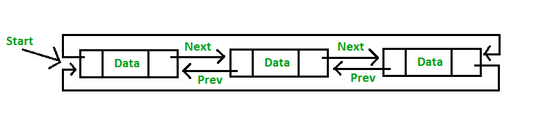
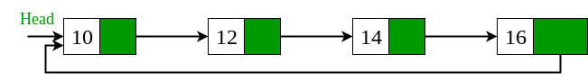

題目 1 + 分析#
Reference#
測驗 1#

分析以下程式碼，推敲 FuncA, FuncB, FuncC 的作用，並且推測程式執行結果。
假設條件：
malloc總是成功而且返回的記憶體空間可讀寫
1#include <stdlib.h>
2#include <stdio.h>
3struct node { int data; struct node *next, *prev; };
4
5void FuncA(struct node **start, int value) {
6 if (!*start) {
7 struct node *new_node = malloc(sizeof(struct node));
8 new_node->data = value;
9 new_node->next = new_node->prev = new_node;
10 *start = new_node;
11 return;
12 }
13 struct node *last = (*start)->prev;
14 struct node *new_node = malloc(sizeof(struct node));
15 new_node->data = value;
16 new_node->next = *start;
17 (*start)->prev = new_node;
18 new_node->prev = last;
19 last->next = new_node;
20}
21
22void FuncB(struct node **start, int value) {
23 struct node *last = (*start)->prev;
24 struct node *new_node = malloc(sizeof(struct node));
25 new_node->data = value;
26 new_node->next = *start;
27 new_node->prev = last;
28 last->next = (*start)->prev = new_node;
29 *start = new_node;
30}
31
32void FuncC(struct node **start, int value1, int value2) {
33 struct node *new_node = malloc(sizeof(struct node));
34 new_node->data = value1;
35 struct node *temp = *start;
36 while (temp->data != value2)
37 temp = temp->next;
38 struct node *next = temp->next;
39 temp->next = new_node;
40 new_node->prev = temp;
41 new_node->next = next;
42 next->prev = new_node;
43}
44
45void display(struct node *start) {
46 struct node *temp = start;
47 printf("Traversal in forward direction \n");
48 for (; temp->next != start; temp = temp->next)
49 printf("%d ", temp->data);
50 printf("%d ", temp->data);
51 printf("\nTraversal in reverse direction \n");
52 struct node *last = start->prev;
53 for (temp = last; temp->prev != last; temp = temp->prev)
54 printf("%d ", temp->data);
55 printf("%d ", temp->data);
56 printf("\n");
57}
58
59int main() {
60 struct node *start = NULL;
61 FuncA(&start, 51); FuncB(&start, 48);
62 FuncA(&start, 72); FuncA(&start, 86);
63 FuncC(&start, 63, 51);
64 display(start);
65 return 0;
66}
作答區
FuncA 的作用是
(a)偵測輸入是否為 circular linked list，若是則將現有所有節點內容排序，否則不做事(b)建立兩個節點並且安插在結尾，內容都是value(c)尋找所有節點，當遇到符合給定數值value的節點時，將 circular linked list 的開頭和剛找到的節點串接(d)建立新節點，內容是value，並安插在開頭(e)建立新節點，內容是value，並安插在結尾(f)建立兩個節點並且安插在開頭，內容都是value
Ans: (e)
FuncB 的作用是
(a)偵測輸入是否為 circular linked list，若是則將現有所有節點內容排序，否則不做事(b)建立兩個節點並且安插在結尾，內容都是value(c)尋找所有節點，當遇到符合給定數值value的節點時，將 circular linked list 的開頭和剛找到的節點串接(d)建立新節點，內容是value，並安插在開頭(e)建立新節點，內容是value，並安插在結尾(f)建立兩個節點並且安插在開頭，內容都是value
Ans: (d)
FuncC 的作用是
(a)偵測輸入是否為 circular linked list，若是則將現有所有節點內容排序，否則不做事(b)建立兩個節點並且安插在結尾，內容分別是value1和value2(c)建立兩個節點並且安插在開頭，內容分別是value1和value2(d)找到節點內容為value2的節點，並在之前插入新節點，內容為value1(e)找到節點內容為value2的節點，並在之後插入新節點，內容為value1(f)找到節點內容為value1的節點，並在之前插入新節點，內容為value2(g)找到節點內容為value1的節點，並在之後插入新節點，內容為value2(h)尋找所有節點，當遇到符合給定數值value1和value2的兩個節點時，將這兩個找到的節點相互串接
Ans: (e)
在程式輸出中，訊息 Traversal in forward direction 後依序印出哪幾個數字呢？
Z1 = ?
(a)63(b)86(c)51(d)48(e)72(f)這個程式有缺陷，無法正確輸出數字
Ans: (d)
Z2 = ?
(a)63(b)86(c)51(d)48(e)72(f)這個程式有缺陷，無法正確輸出數字
Ans: (c)
Z3 = ?
(a)63(b)86(c)51(d)48(e)72(f)這個程式有缺陷，無法正確輸出數字
Ans: (a)
Z4 = ?
(a)63(b)86(c)51(d)48(e)72(f)這個程式有缺陷，無法正確輸出數字
Ans: (e)
Z5 = ?
(a)63(b)86(c)51(d)48(e)72(f)這個程式有缺陷，無法正確輸出數字
Ans: (b)
在程式輸出中，訊息 Traversal in reverse direction 後依序印出哪幾個數字呢？
Z6 = ?
(a)63(b)86(c)51(d)48(e)72(f)這個程式有缺陷，無法正確輸出數字
Ans: (b)
Z7 = ?
(a)63(b)86(c)51(d)48(e)72(f)這個程式有缺陷，無法正確輸出數字
Ans: (e)
Z8 = ?
(a)63(b)86(c)51(d)48(e)72(f)這個程式有缺陷，無法正確輸出數字
Ans: (a)
Z9 = ?
(a)63(b)86(c)51(d)48(e)72(f)這個程式有缺陷，無法正確輸出數字
Ans: (c)
Z10 = ?
(a)63(b)86(c)51(d)48(e)72(f)這個程式有缺陷，無法正確輸出數字
Ans: (d)
See also
延伸題目：
在上述 doubly-linked list 實作氣泡排序和合併排序，並提出需要額外實作哪些函示才足以達成目標
引入統計模型，隨機新增和刪除節點，然後評估上述合併排序程式的時間複雜度和效能分佈 (需要製圖和數學分析)
測驗 2#

考慮以下程式碼，推敲程式作用並分析輸出。 假設條件：
malloc總是成功而且返回的記憶體空間可讀寫malloc()得到的地址成嚴格單調遞增函數
1#include <stdio.h>
2#include <stdlib.h>
3
4/* Link list node */
5struct node { int data; struct node *next; };
6
7int FuncX(struct node *head, int *data) {
8 struct node *node;
9 for (node = head->next; node && node != head; node = node->next)
10 data++;
11 return node - head;
12}
13
14struct node *node_new(int data) {
15 struct node *temp = malloc(sizeof(struct node));
16 temp->data = data; temp->next = NULL;
17 return temp;
18}
19
20int main() {
21 int count = 0;
22 struct node *head = node_new(0);
23 head->next = node_new(1);
24 head->next->next = node_new(2);
25 head->next->next->next = node_new(3);
26 head->next->next->next->next = node_new(4);
27 printf("K1 >> %s\n", FuncX(head, &count) ? "Yes" : "No");
28 head->next->next->next->next = head;
29 printf("K2 >> %s\n", FuncX(head, &count) ? "Yes" : "No");
30 head->next->next->next->next->next = head->next;
31 printf("K3 >> %s\n", FuncX(head, &count) ? "Yes" : "No");
32 head->next = head->next->next->next->next->next->next->next->next;
33 printf("K4 >> %s\n", FuncX(head, &count) ? "Yes" : "No");
34 printf("K5 >> %d\n", head->next->data);
35 printf("count >> %d\n", count);
36 return 0;
37}
作答區
FuncX 的作用是 (涵蓋程式執行行為的正確描述最多者)
(a)走訪 circular linked list 所有節點，計算節點數量並更新(b)走訪 circular linked list 所有節點，計算節點數量並更新，回傳最後一個節點和開頭的地址距離 (offset)(c)走訪 circular linked list 所有節點，回傳最後一個節點和開頭的地址距離 (offset)(d)判斷是否為 circular linked list，若為 circular 則回傳非零值，其他回傳0(e)判斷是否為 circular linked list，若為 circular 則回傳0，其他非零值(f)判斷是否為 circular linked list，若為 circular 則回傳0，其他非零值，過程中計算走訪的節點總數(g)判斷是否為 circular linked list，若為 circular 則回傳非零值，其他回傳0，過程中計算走訪的節點總數
Ans: (e)
K1 >> 後面接的輸出為何
(a)No(b)Yes
Ans: (b)
K2 >> 後面接的輸出為何
(a)No(b)Yes
Ans: (a)
K3 >> 後面接的輸出為何
(a)No(b)Yes
Ans: (a)
K4 >> 後面接的輸出為何
(a)No(b)Yes
Ans: (a)
K5 >> 後面接的輸出為何
(a)5(b)4(c)3(d)2(e)1(f)0
Ans: (f)
count >> 後面接的輸出為何
(a)5(b)4(c)3(d)2(e)1(f)0
Ans: (f)